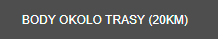
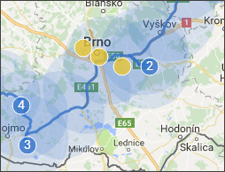
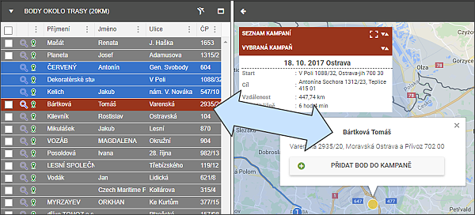
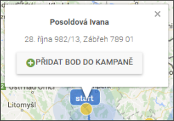

Body okolo trasy
Pro zjednodušení práce s trasací a adresami si uživatel může pomocí tlačítka vedle filtru zobrazit BODY OKOLO TRASY (20KM).

Tato funkce vykreslí oblasti okolo trasy a zobrazí žlutě všechny adresy dlužníků, které se nachází ve vykreslené oblasti.

Kliknutím na žlutý bod levým tlačítkem myši se obarví řádek dlužníka v seznamu.

Kliknutím na žlutý bod pravým tlačítkem myši se otevře lokální dialogové okno, kde kromě jména dlužníka a adresy je i tlačítko s možností zařadit bod do trasy.

Po kliknutí na tlačítko bod z mapy zmizí a uživatel má dvě možnosti: